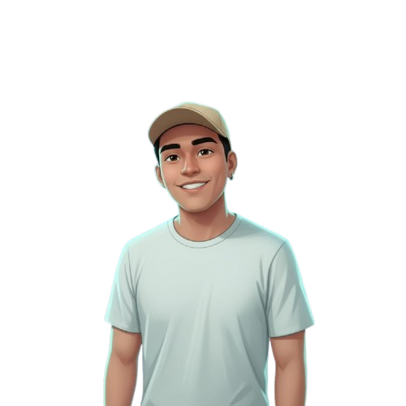

Sou estudante de Sistemas de Informação, com foco em desenvolvimento
de software e experiência do usuário (UX). Sou comprometido com a qualidade, inovação e crescimento contínuo,
sempre em busca de aprender e contribuir em projetos com propósito.
Além da tecnologia, sou apaixonado por esportes, que me inspiram a manter disciplina, foco e trabalho
em equipe valores que levo também para minha vida profissional.
Vamos conversar? Estou aberto a colaborações, estágios e oportunidades que me permitam continuar evoluindo profissionalmente.